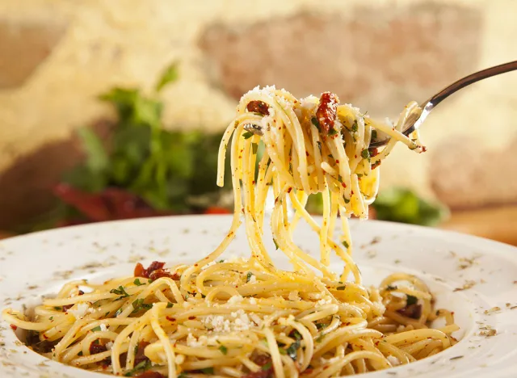

Make pasta in five simple steps
When it's boiling (you'll see big bubbles in the water and steam rising from the pot), add your pasta
After it comes to a boil again, set a timer to the minutes specified on the pasta box, adjusting the flame downward if it begins boiling over, which sometimes happens.
All that's left is adding the sauce. Might we recommend this simple one made from garlic and oil ((and from which we adapted our pasta-cooking instructions)?